Hiraeth / Selected title screen references
17 covers selected by the user with hearts in Midjourney on October 9, 2026. Exploration is paused; these are references for a future title-screen and logo redesign.
Original 1456 × 816 images. Click a cover to open its Midjourney source. Original comparison labels are preserved. Prompts and provenance.
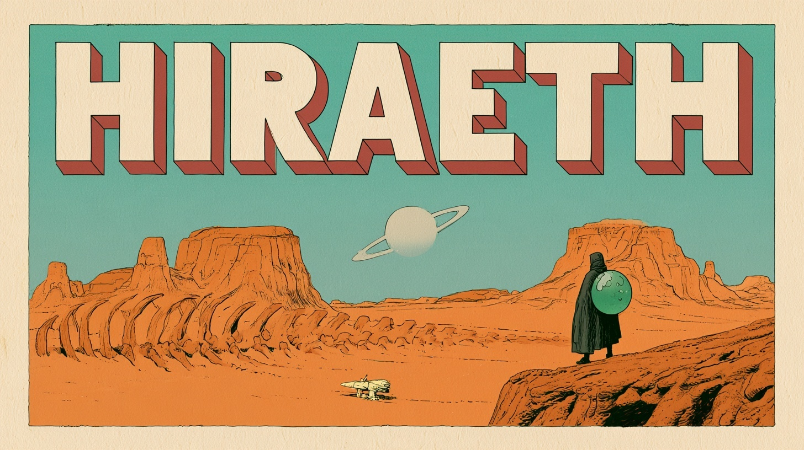
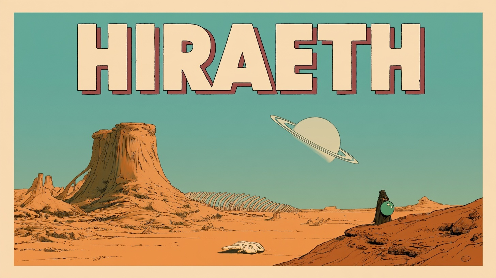
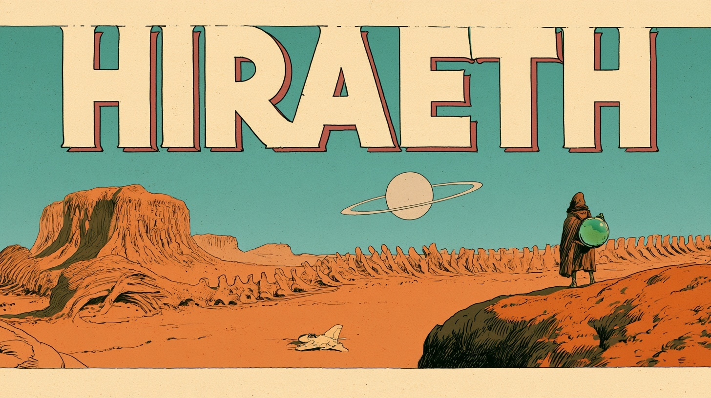
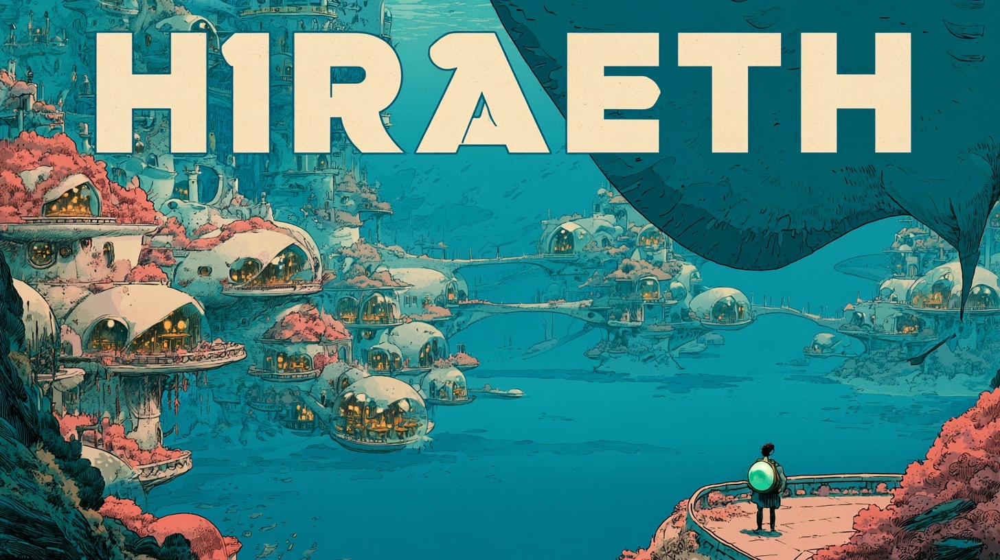
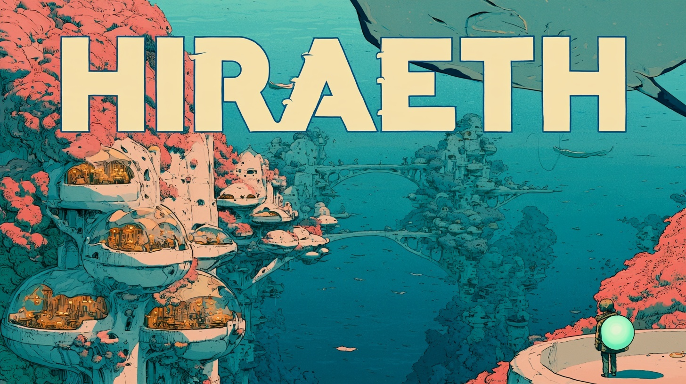
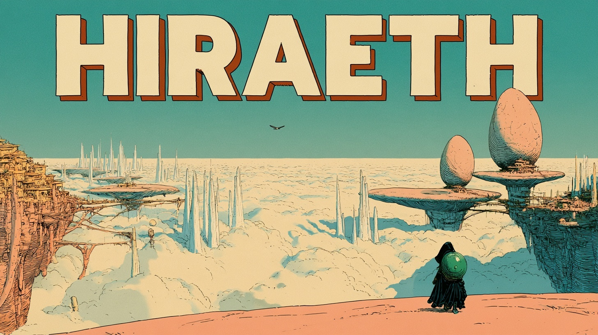
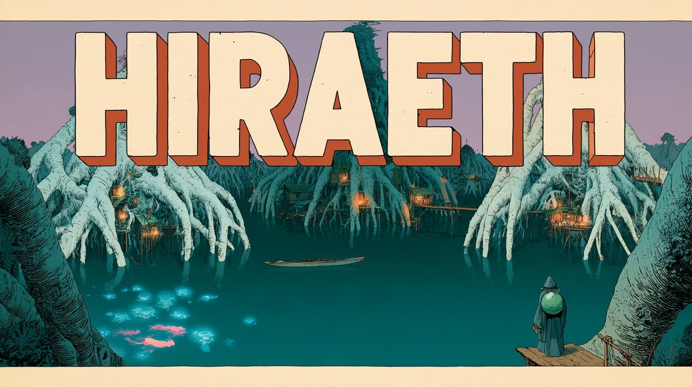
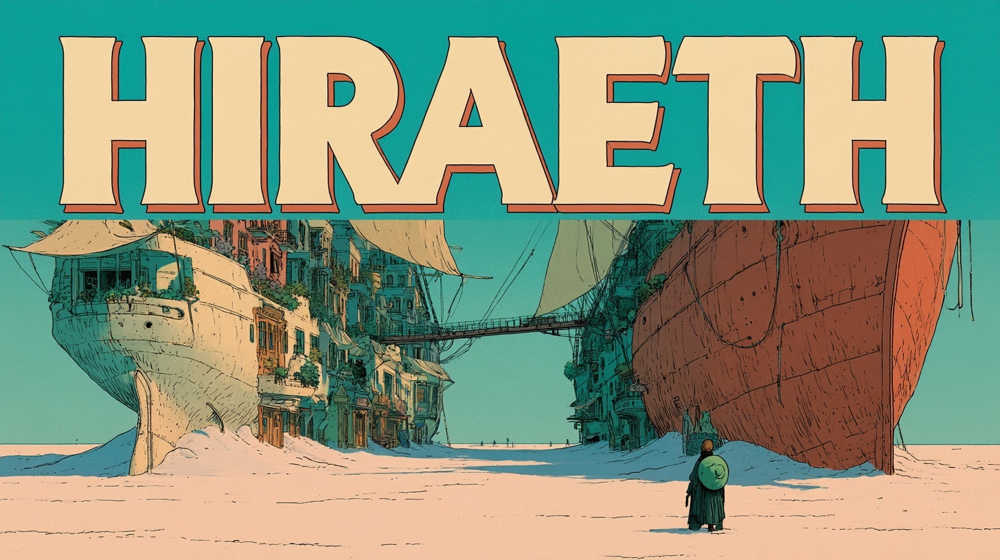
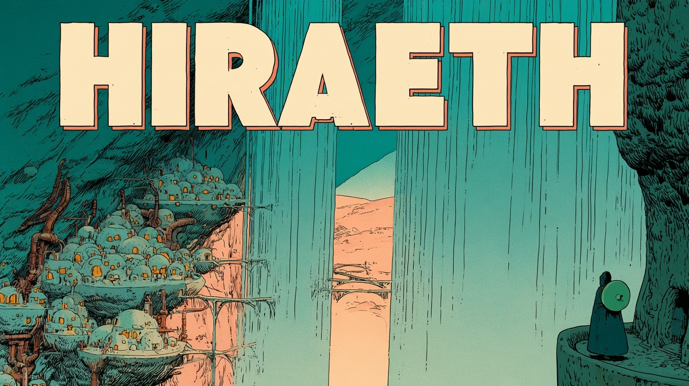
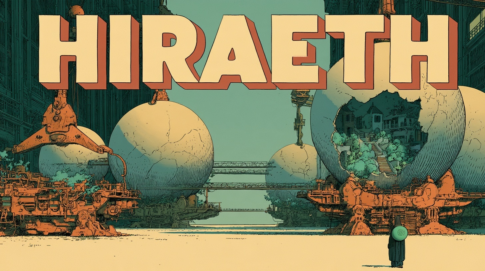
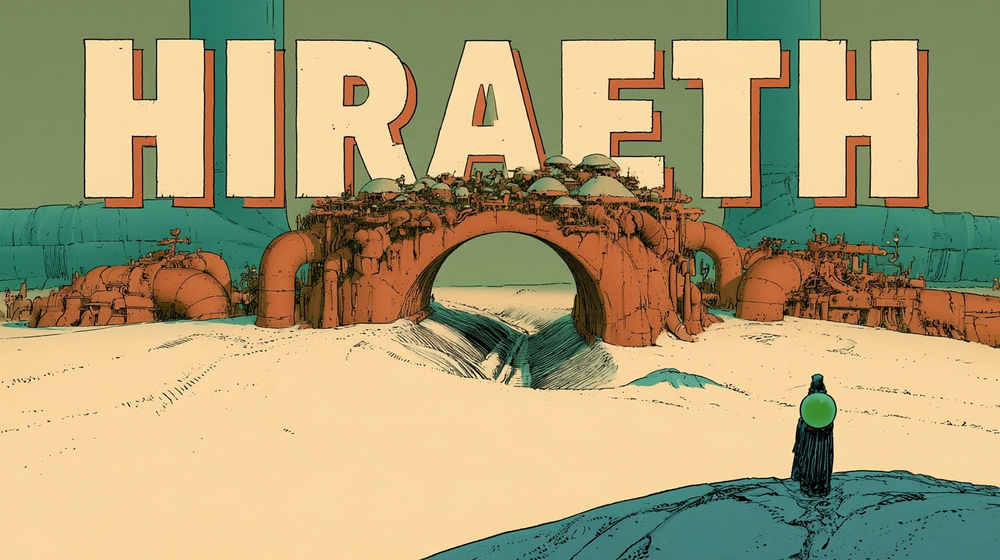
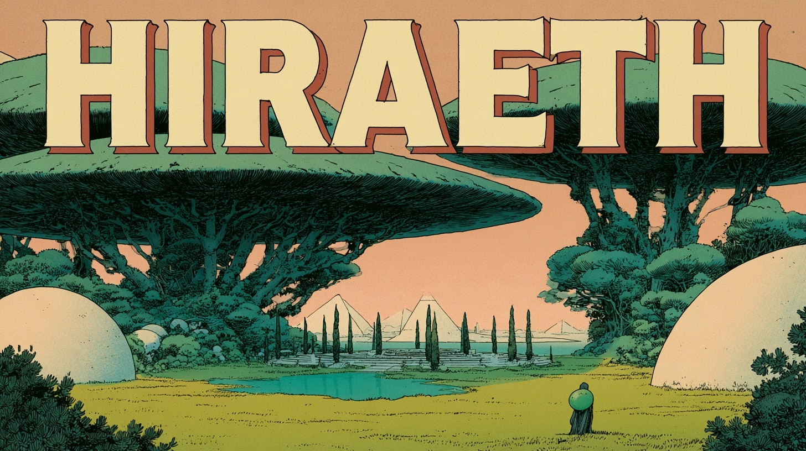
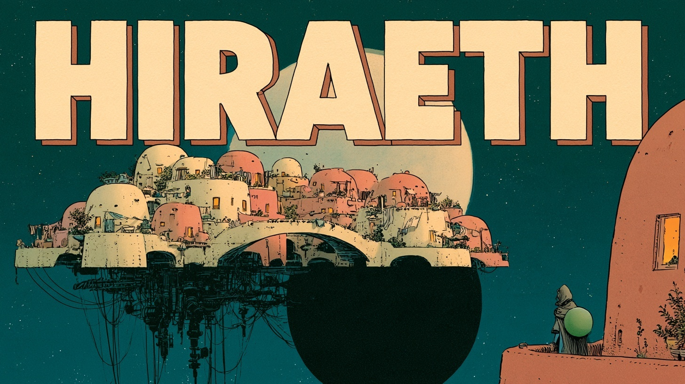
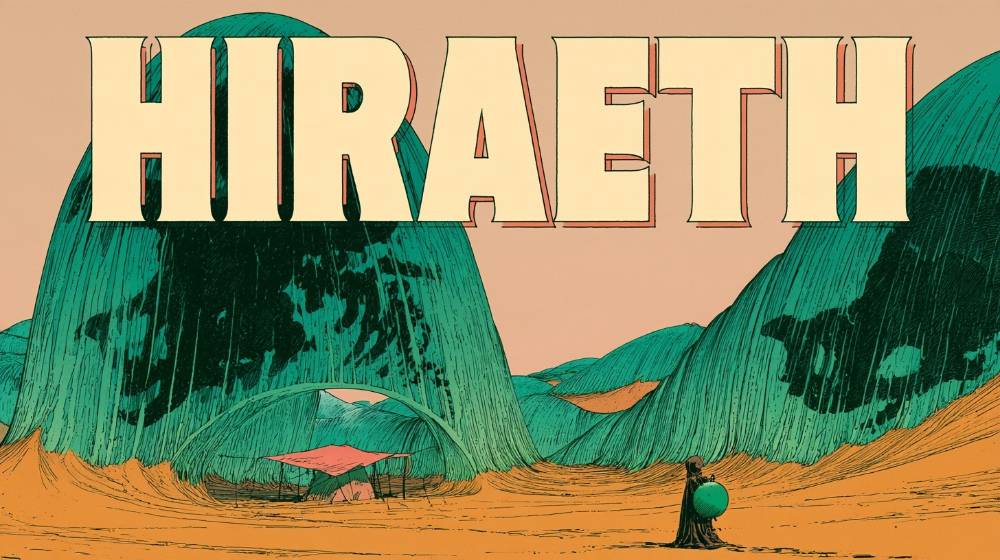
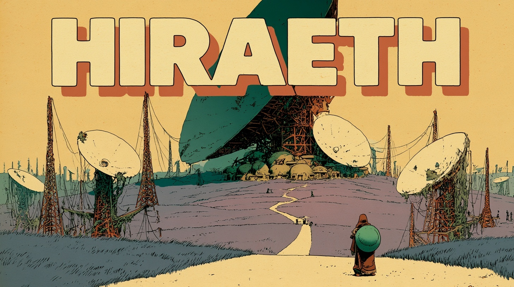
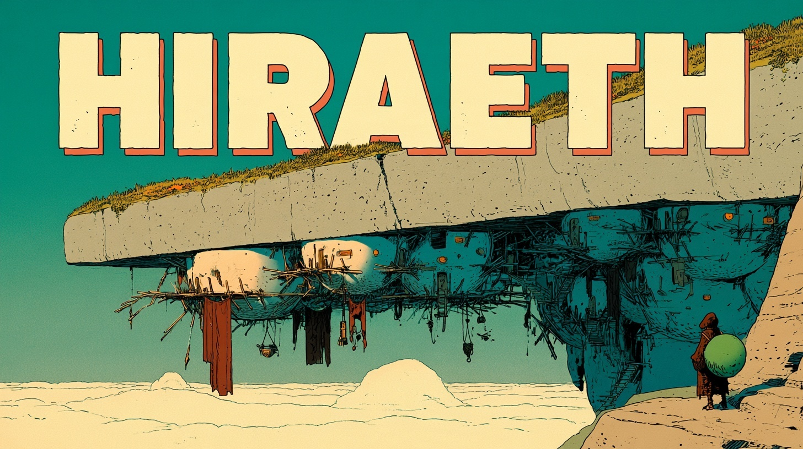
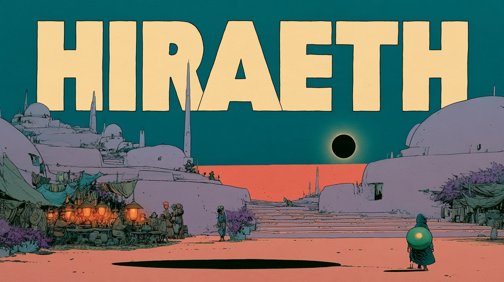